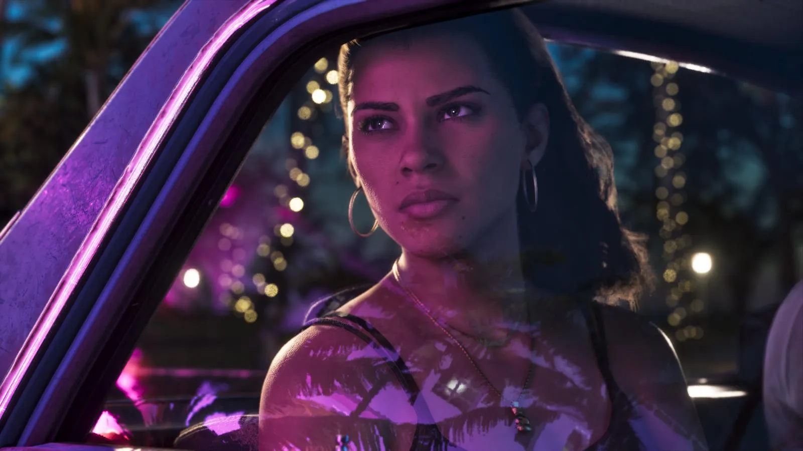
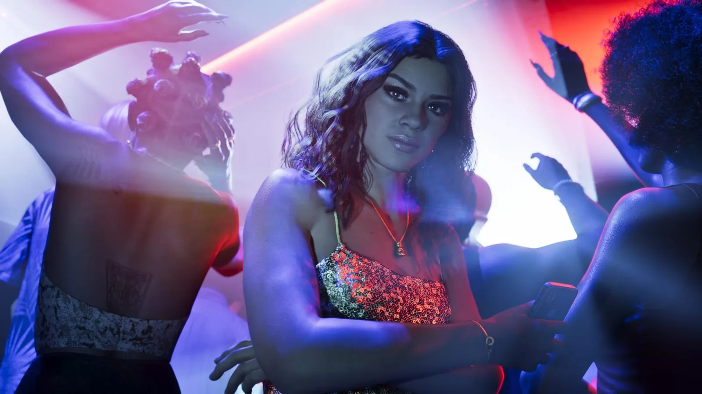

Русский язык в GTA 6: субтитры есть, озвучки нет — и как в игре звучат другие языки
Опубликовано:

- Русский язык в GTA 6 есть официально.
- Переведены субтитры, меню и интерфейс.
- Озвучка только английская — как во всех GTA.
- Всего игра поддерживает 13 языков.
- В Вайс-Сити много испанской речи — как в реальном Майами.
Есть ли русский язык
Да. Русский входит в официальный список поддерживаемых языков Grand Theft Auto VI в магазине Rockstar и в карточках PlayStation Store и Microsoft Store. На русском будут меню, подсказки, задания, сообщения в телефоне и субтитры диалогов.
Это важно, потому что в GTA 6 очень много текста: соцсеть внутри игры, переписки героев (например, сообщения Лусии из «Расширенного показа», «Расширенный показ» GTA 6: что показали за 26 минут — с таймкодами), вывески и экраны телефона. Насколько полно переведены надписи в самом мире — вывески, рекламные щиты — станет ясно только после релиза: обычно Rockstar их не переводит, они остаются частью мира.
Почему нет русской озвучки
Rockstar никогда не дублировала GTA ни на один язык. Причины понятны: в каждой игре — сотни персонажей, тысячи реплик прохожих, радиоведущие, ток-шоу и реклама. Кроме того, актёры героев играют в студии захвата движений — голос, мимика и движения записываются вместе, и дубляж ломает эту связь.
Поэтому GTA 6, как GTA 5 и Red Dead Redemption 2, выходит с английской озвучкой и переведёнными субтитрами. Фанатские озвучки для прошлых игр Rockstar появлялись, но это неофициальные моды, и на консолях их не поставить.

Все 13 языков
| Язык | Субтитры и интерфейс |
|---|---|
| Английский | ✅ + озвучка |
| Русский | ✅ |
| Французский | ✅ |
| Итальянский | ✅ |
| Немецкий | ✅ |
| Испанский (Испания) | ✅ |
| Испанский (Мексика) | ✅ |
| Португальский (Бразилия) | ✅ |
| Польский | ✅ |
| Японский | ✅ |
| Корейский | ✅ |
| Китайский (упрощённый) | ✅ |
| Китайский (традиционный) | ✅ |
Испанский в Вайс-Сити
В Майами, прототипе Вайс-Сити, больше 70% жителей — латиноамериканцы, и три четверти говорят дома не по-английски (данные переписи США). Rockstar это перенесла в игру: в трейлерах и «Расширенном показе» видны вывески на испанском (JOYERÍA, CASA DE EMPEÑO), выпуски новостей MEGA NOTICIAS и бегущие строки на испанском. Почитать, как это устроено в реальности, можно в сравнении «Вывеска Joyería и испанский в Майами».
Русский в истории GTA
- GTA 4 (2008) — главный герой Нико Беллик, серб, приезжает в Либерти-Сити к кузену. Одна из сюжетных линий — русская мафия в районе Hove Beach (пародия на Брайтон-Бич). В игре была радиостанция Vladivostok FM с русской музыкой.
- GTA 5 (2013) — русские субтитры, английская озвучка.
- Red Dead Redemption 2 (2018) — то же самое.
- GTA 6 (2026) — русские субтитры и интерфейс, английская озвучка.
Как удобнее играть с субтитрами
- Увеличьте размер субтитров в настройках — у новых игр Rockstar обычно есть такой пункт.
- Включите фон под субтитрами, если на ярком солнце Вайс-Сити текст плохо читается.
- Язык игры обычно берётся из языка системы консоли; если игра запустилась на английском — проверьте язык системы или настройки самой игры.
- В GTA Vice City (2002) была радиостанция Radio Espantoso с латиноамериканской музыкой.
- В новостях GTA 6 бегущая строка «Confesión escrita en tinta» — испанская игра слов о татуировке-улике.
Частые вопросы
Есть ли русский язык в GTA 6?
Да: субтитры, меню и интерфейс.
Будет ли русская озвучка в GTA 6?
Нет, озвучка только английская.
Сколько языков в GTA 6?
13.
Источники: Rockstar Store и PlayStation Store — список поддерживаемых языков GTA VI; U.S. Census Bureau QuickFacts — Майами-Дейд; Rockstar Games — GTA IV (2008), GTA V (2013), RDR 2 (2018).
Каждый день — одно сравнение: кадр игры рядом с реальным фото. Подписывайтесь:
YouTubeInstagramTikTok